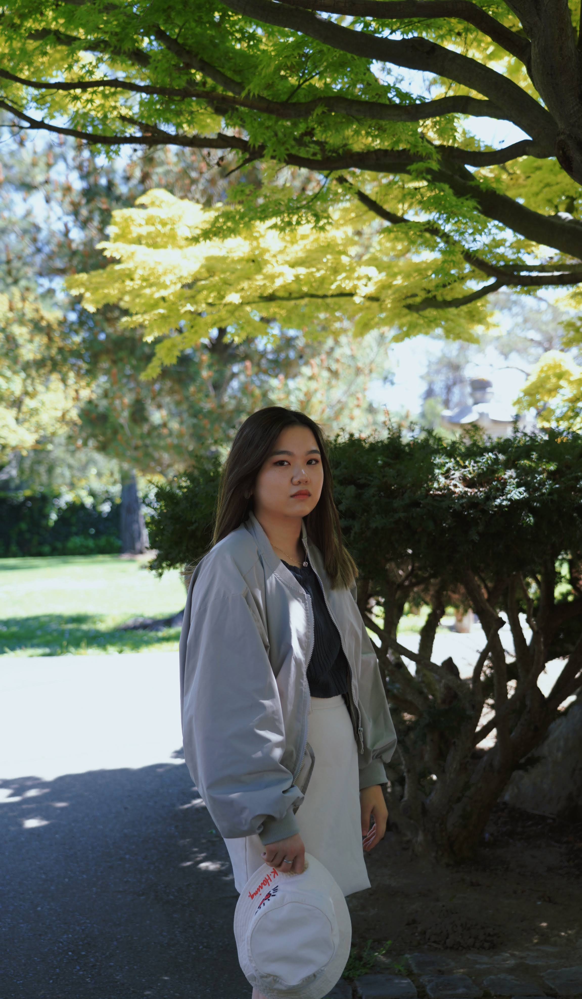

♒ About Me ♒

My name is Mandy Chen. I'm currently a Senior attending San Jose State Univristy and major in BFA Digital Media Art. The area of intrest is 3D modeling and movie composition.
I creates 3D models, landscapes, and photograph. During creation, the connection between Chinese culture and history are linked to the artworks. I read books and articles of that records the details of Chinese cultures to capture any details presented. The details presented in the text will be turned into 3D models and landscapes.
The artworks are a way to make the past come alive. They are a form to let our imagination become realities and for us to reveral the past. The tools are a support to help artist demonstrate the records of the text and experiences what the recorders see, smell, and touch. The interactions with the past will present the importance of people’s life cycle, habits, and how they evolve to present societies. The works challenges how we view the world now and how the world was viewed at the past.
The photograph I took is a way to record the journey I’ve experienced. They are the prove of my life had ever existed and a method to spread the feelings I held. Compare to live vidoes, the still photographs let the viewers explore the great amount of details inside it. One photograph is often connect to one story I had.
